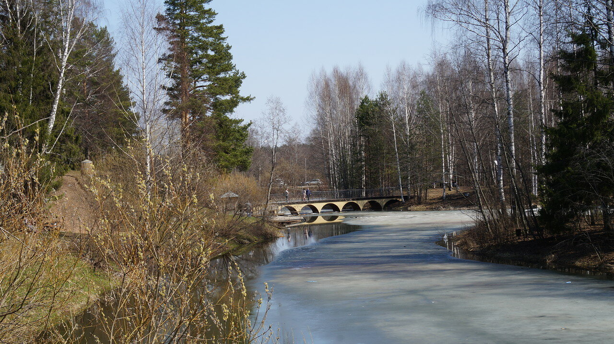
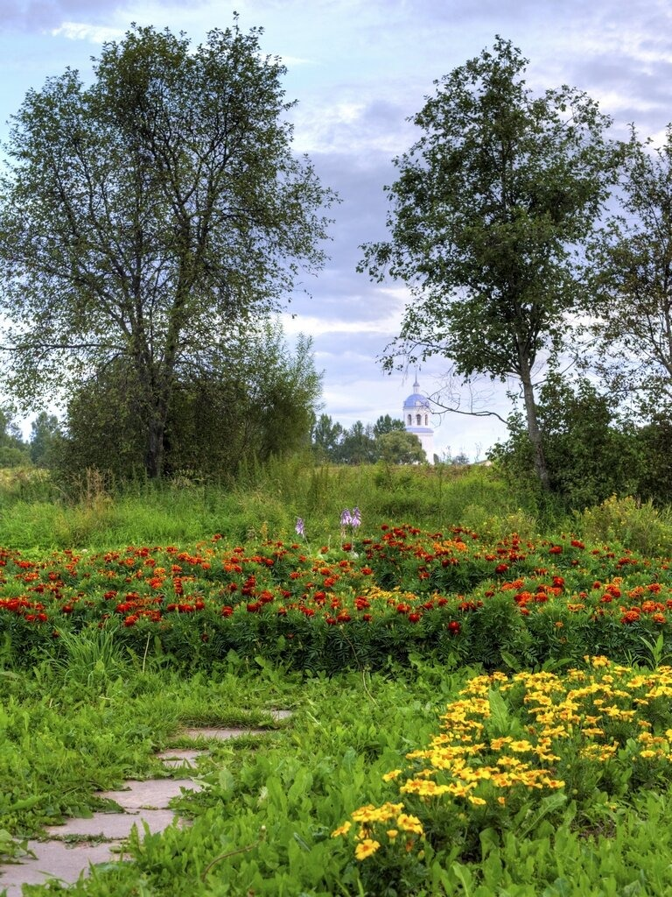
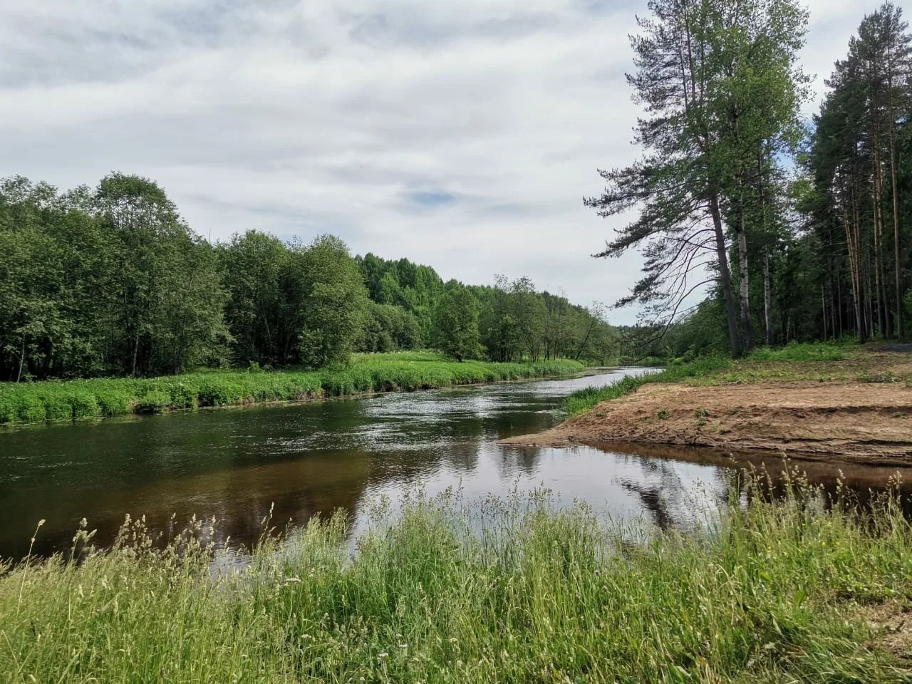

Project archive
Nature photography and local materials come together in one calm gallery.



Route map
QR block for a future interactive map link.
Project materials
QR block for the presentation and research files.